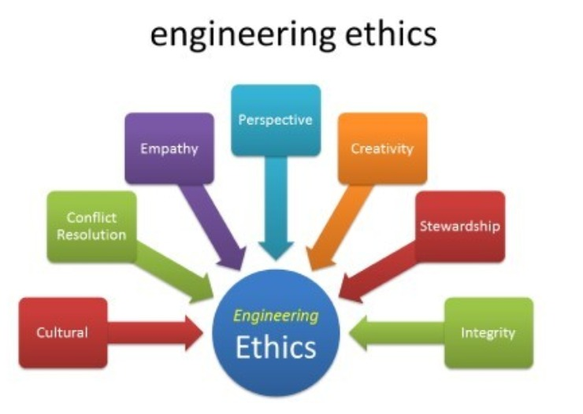

ETHICS
Engineering Ethics
•The study of moral issues and decisions confronting individuals and organizations involved in engineering.
•The study of related questions about moral conduct, character and relationships of peoples and organizations involved in technological development.
•Engineering Ethics: is about
•how we have to act and live as an engineer,
•what we have to consider when making decisions,
•according to what standards are these actions right or wrong.
•Shortly Engineering ethics is how engineers morally act as an Engineer. This is professional ethics NOT personal ethics.

Aims of studying ethics
•Moral Imagination: To minimize the chances of being taken by surprise, engineers must exercise great imagination in considering possible alternatives and their likely consequences.
•Recognizing (Moral) Ethical Issues:
•Analyzing Concepts:
•Eliciting (Bring out) a Sense of Responsibility:
•Addressing un-clarity, un-certainty, and disagreement.